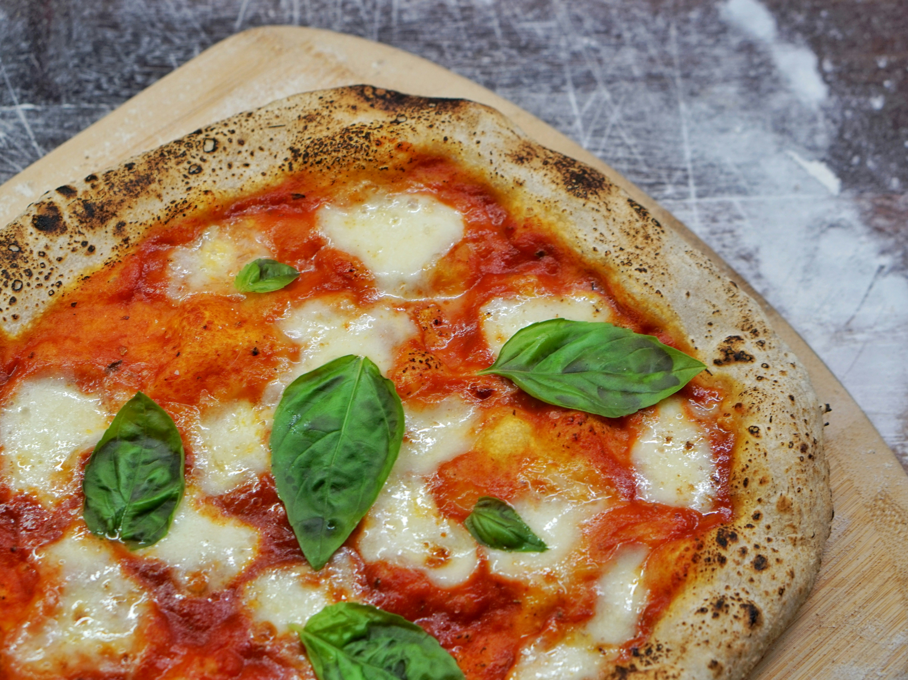

Margherita Pizza

The city of Naples in Italy is widely known to be the home of pizza. Napels was founded as early as the 16th-century. The majority of the population was very poor and so pizza - flatbread with toppings that was sold by street vendors and could be eaten for any meal - met the needs of Neapolitans as a food that could be eaten quickly and was cheap.
- Prep time - 25 Minutes
- Cook time - 20 minutes
Ingredients
- 1 batch easy whole wheat pizza dough or 1 pound store-bought pizza dough
- 1 large can (28 ounces) whole San Marzano tomatoes
- 12 ounces (dry weight) ovoline-type mozzarella or other fresh mozzarella balls, ideally water-packed
- Handful of fresh basil, thinly sliced plus small leaves
- Additional garnishes: Drizzle of extra-virgin olive oil, flaky sea salt or kosher salt and optional red pepper flakes
Method
- Preheat the oven to 500 degrees Fahrenheit with a rack in the upper third of the oven. If you're using a baking stone or baking steel, place it on the upper rack. Prepare dough through step 5.
- Place a medium mixing bowl in the sink and pour the canned tomatoes into the bowl, juices and all. Crush the tomatoes by hand. Spread about ¾ cup of the tomato sauce evenly over each pizza, leaving about 1 inch bare around the edges.
- If your mozzarella is packed in water, drain off the water and gently pat the mozzarella dry on a clean tea towel or paper towels. If you're working with large mozzarella balls, tear them into smaller 1-inch balls. Distribute the mozzarella over the pizza, concentrating it a bit more in the center of the pizza, as it will melt toward the edges.
- Bake pizzas individually on the top rack until the crust is golden and the cheese is just turning golden, about 10 to 12 minutes (or significantly less, if you're using a baking stone/steel—keep an eye on it).
- Top each pizza generously with fresh basil, followed by a light back-and-forth drizzle of olive oil, a sprinkling of salt, and red pepper flakes, if you wish. Slice and enjoy. Leftover pizza will keep well in the refrigerator for up to 4 days.
Tips
- Vegan alternative: While untraditional, this pizza would be good with vegan sour cream drizzled across the pizza both before and after baking. Simply omit the Parmesan in the pizza crust recipe.
- Gluten free alternative: Substitute your favorite homemade or store-bought pizza dough.